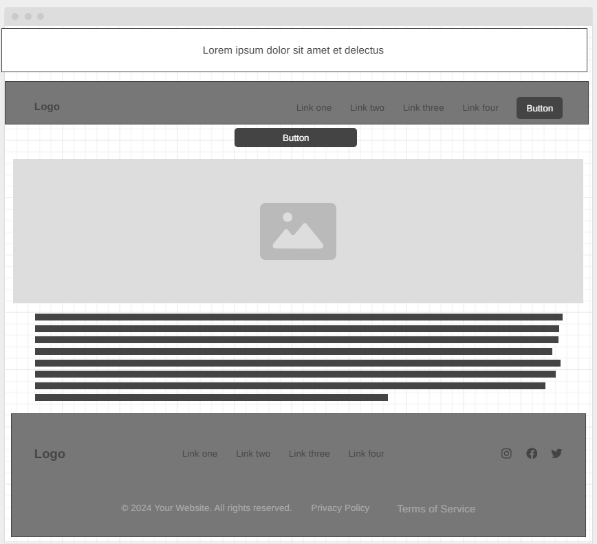
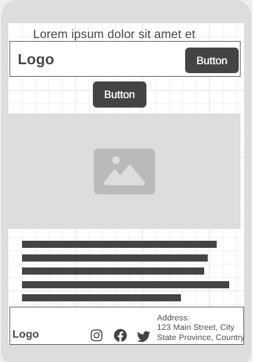

Site Name
Name: Building Habits By Karen Rodas
Reason for Selection: I am deeply passionate about topics such as nutrition and enhancing overall well-being, particularly through healthy eating habits. Karen Rodas, a skilled nutrition professional, has personally guided me in identifying and improving my eating habits, leading to a significant positive change in my lifestyle. I believe that, just as she helped me, she can make a meaningful impact on many others by offering her expertise through this website.
Site Purpose
The purpose of this page is to provide support to people of all ages who wish to transform their nutritional habits and improve their quality of life. Through the blog, they will find useful and up-to-date information, be able to schedule appointments for personalized guidance, and learn more about the professional Karen Rodas, who is committed to guiding every step of this transformation process.
Scenarios
- Why should I consult a nutritionist?
What types of services do you offer?
How can I schedule an appointment?
What can I expect from a consultation with a nutricionist?
Can I get a personalized meal plan?
How much does a consultation cost?
How can I improve my lifestyle and nutrition?.
What types of diets do you offer?
How long will it take to see results?
Can I improve my health if I have a medical condition (diabetes, hypertension, etc.)?
Color Schema
Primary Color: #FFA500 (Orange) - Used for headings and buttons.
Secondary Color: #F4F4F4 (Light Gray) - Used for background elements and subtle accents.
Typography
Primary Font: Montserrat - Used for headings and navigation.
Secondary Font: Open Sans - Used for body text and general content.
Wireframe
Desktop
Mobile
